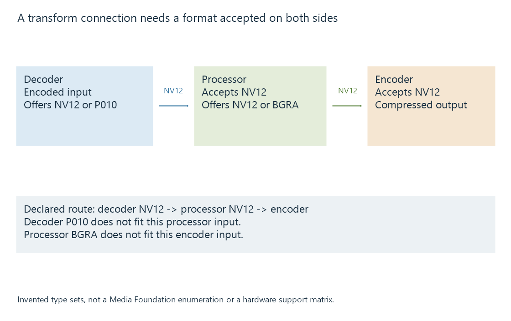

Media Foundation transforms and processing state
A Media Foundation transform is a Windows media-processing component whose negotiated types, input/output state and resource context determine its decoding, encoding or processing role.
A Media Foundation transform, or MFT, is a Windows media-processing component. The same component model can represent a decoder, encoder or picture-processing operation.
The label describes an interface contract. Its actual implementation and device/resource context determine where the work runs.
Media types define the transformation
A transform negotiates the media types it accepts and produces. A decoder accepts encoded input and produces pictures; an encoder accepts suitable pictures and produces compressed output.

| Transform role | Relationship |
|---|---|
| Decoder | Encoded configuration to accepted picture representation |
| Processor | One picture configuration to another |
| Encoder | Prepared pictures to selected compressed output |
The negotiated output must fit the next consumer. A decoded 10-bit picture format and an encoder expecting another format can need a suitable processing step between them.
The transform framework coordinates those types; it does not make every proposed connection valid.
A type must fit both sides of the connection
An original negotiation model makes the cross-stage requirement concrete:
| Component | Accepted input | Offered output |
|---|---|---|
| Decoder | Selected encoded video | NV12 or P010 |
| Processor | NV12 | NV12 or BGRA |
| Encoder | NV12 | Selected compressed output |
The compatible route through these declarations uses NV12 from decoder to processor and NV12 from processor to encoder.
Selecting P010 from the decoder would not fit this processor's declared input. Selecting BGRA from the processor would not fit this encoder's declared input. The existence of each individual component does not repair either connection.
These are invented capability sets, not a Media Foundation enumeration. They illustrate how negotiation chooses a complete relationship rather than independently choosing a preferred format at every stage.
The pipeline can select another processor or explicitly add an appropriate conversion when supported. That changes its negotiated route and resource requirements; it should not silently reinterpret P010 or BGRA bytes as NV12.
Synchronous input/output state has backpressure
The basic processing model exposes ProcessInput() and ProcessOutput(). Their results tell the caller whether another input can be accepted or whether output needs handling.
This original synchronous trace illustrates the relationship:
ProcessInput(A) -> accepted
ProcessInput(B) -> MF_E_NOTACCEPTING
ProcessOutput() -> completed result available
ProcessInput(B) -> accepted
ProcessOutput() -> MF_E_TRANSFORM_NEED_MORE_INPUT
The trace is a model, not an actual COM call sequence. It preserves B when the first attempt could not accept it.
MF_E_NOTACCEPTING can describe a state that needs output progress, rather than an unsupported codec. MF_E_TRANSFORM_NEED_MORE_INPUT says that this output request needs further input under the transform's current processing state.
The application interprets status, output data and the negotiated contract together. One accepted input does not universally promise exactly one immediately available output.
Asynchronous transforms have another scheduling contract
Media Foundation also provides an asynchronous processing model. Hardware MFTs have documented asynchronous and dynamic-format requirements.
The caller follows event/readiness rules appropriate to that model rather than blindly using a synchronous polling loop. A host call returning and a media operation finishing can occur at different times.
This lets queued work proceed while the application performs other coordination. The input and output resources still need valid ownership through their consumers' use.
A software component can coordinate hardware decoding
Microsoft's D3D11 decoder-integration documentation calls the codec-facing component a software decoder while the driver-backed decoder device performs accelerated reconstruction.
That illustrates why component implementation, registered hardware-MFT category and execution of a particular media operation are different facts. An MFT name alone should not be read as a CPU-utilization measurement.
A suitable device manager and decoder configuration connect that component to Direct3D resources. The resulting pictures still need compatible downstream types and context.
A format change propagates to consumers
A source or transform can change its output picture configuration. The application needs to establish the new accepted types and resource requirements with the affected pipeline.
A different dimension or surface format can require new buffers or a different next-stage configuration. Continuing to interpret the new output using the old assumptions can make an otherwise supported source fail downstream.
See Also
- Direct3D 11 video acceleration (D3D11VA)
- DirectX Video Acceleration (DXVA2)
- Hardware decoding and software decoding
- Hardware encoding and software encoding
- How a transcoding pipeline works